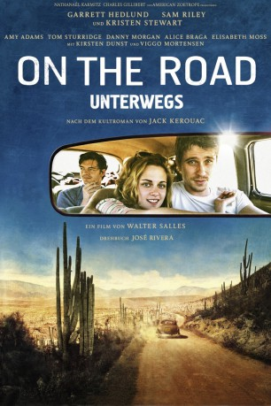

#7755 On the Road - Unterwegs
 
 IMDB-Wertung: 6.1 / 10
IMDB-Wertung: 6.1 / 10  Metascore: 0
Metascore: 0 
Kurz nach dem Tod seines Vaters lernt der junge Schriftsteller Sal den gleichaltrigen, charismatischen und lebenshungrigen Dean kennen. Kurzerhand reißt Dean Sal aus der Arbeit an seinem Roman und seiner lethargischen Trauer und nimmt ihn mit auf einen langen Trip Richtung Westen. Stets die nächste Etappe vor Augen begeben sich die beiden in den Taumel des bloßen Seins, leben vom immer letzten Dollar, berauschen sich an der unendlichen Weite der Landschaft, den Drogen, dem Sex, dem Jazz und ihren wilden Gedanken. Auf ihrer Reise stoßen sie auf neue Wegbegleiter und kehren ein bei alten Bekannten.
Jahr: 2012
Dauer: 140 Minuten
FSK: 12
Land: Frankreich Studio: Concorde FilmverleihTonspuren: DTS - ,
Untertitel: Deutsch,
Auflösung: 1080p (1920x816) Größe: 11673 MB
Genre: Drama, Abenteuer, Liebe
Regisseur: Walter Salles
Drehbuch: Jack Kerouac
Soundtrack: Gustavo Santaolalla
Darsteller:
 Sam Riley als Sal Paradise / Jack Kerouac
Sam Riley als Sal Paradise / Jack Kerouac Garrett Hedlund als Dean Moriarty / Neal Cassady
Garrett Hedlund als Dean Moriarty / Neal Cassady Kristen Stewart als Marylou / LuAnne Henderson
Kristen Stewart als Marylou / LuAnne Henderson Amy Adams als Jane / Joan Vollmer
Amy Adams als Jane / Joan Vollmer Tom Sturridge als Carlo Marx / Allen Ginsberg
Tom Sturridge als Carlo Marx / Allen Ginsberg Alice Braga als Terry / Bea Franco
Alice Braga als Terry / Bea Franco Elisabeth Moss als Galatea Dunkel / Helen Hinkle
Elisabeth Moss als Galatea Dunkel / Helen Hinkle- Danny Morgan als Ed Dunkle / Al Hinkle
 Kirsten Dunst als Camille / Carolyn Cassady
Kirsten Dunst als Camille / Carolyn Cassady Viggo Mortensen als Old Bull Lee / William S. Burroughs
Viggo Mortensen als Old Bull Lee / William S. Burroughs Sarah Allen als Vicki
Sarah Allen als Vicki- Clara Altimas als Newlywed Woman
- Leif Anderson als Chevy Owner
 Dan Beirne als Newlywed Man
Dan Beirne als Newlywed Man- Ayana O'Shun als Walter's Wife
- Kim Bubbs als Laura
 Steve Buscemi als Tall Thin Salesman
Steve Buscemi als Tall Thin Salesman Jason Cavalier als Disgruntled Driver
Jason Cavalier als Disgruntled Driver Joe Chrest als Virginia Cop
Joe Chrest als Virginia Cop- Patrick John Costello als Chad King
- Eric Davis als Paul
 Larry Day als Policeman New Jersey
Larry Day als Policeman New Jersey- Sean Dillingham als Cotton Foreman
 Paul Dillon als Montana Slim
Paul Dillon als Montana Slim Kyle Gatehouse als Migrant Worker
Kyle Gatehouse als Migrant Worker- Barbara Glover als Okie Woman
- Tyler Hall als Dean Stunt Double
 Robert Higden als Sam Pharmacy
Robert Higden als Sam Pharmacy Kaniehtiio Horn als Rita Bettancourt
Kaniehtiio Horn als Rita Bettancourt Terrence Howard als Walter
Terrence Howard als Walter- Giselle Itié als Tonia
 Daniel Kash als Henry Glass
Daniel Kash als Henry Glass- Joey Klein als Tom Saybrook
- Neil Kroetsch als Denver Barber
 Jake La Botz als Okie Hitchhiker
Jake La Botz als Okie Hitchhiker- Gilbert Larose Jr. als Stunt Driver Utility
- Rocky Marquette als Alfred
 Coati Mundi als Slim Gaillard
Coati Mundi als Slim Gaillard- Michael Sarrazin als Irish Catholic Priest
 Barry Del Sherman als Dynamite Truck Driver
Barry Del Sherman als Dynamite Truck Driver- Gina Vargas als Whorehouse Girl 2
 Madison Wolfe als Dodie Lee (8)
Madison Wolfe als Dodie Lee (8)- Daniela Wong als Whorehouse Girl 1
- Giovanna Zacarías als Red Head
- LaFonda Baker als Dorothy Banks (uncredited)
 Karen Belfo als Girl at Party (uncredited)
Karen Belfo als Girl at Party (uncredited)- Janeé Crump als (uncredited)
- Jeffrey T Ferguson als Lunchbox Guy (uncredited)
- Jenessa Grant als Farmer's Daughter (uncredited)
- Veronica Loud als Dinah Luke (uncredited)
Datei: X:\2012(N-Z)\On the Road - Unterwegs (2012, FSK12, 1920x816).mkv seit 15.12.2017
Festplatte: HD 2012(N-Z)-2013(A-H)
 Es gibt insgesamt 138 Filme in der Gruppe '2012(N-Z)'
Es gibt insgesamt 138 Filme in der Gruppe '2012(N-Z)'